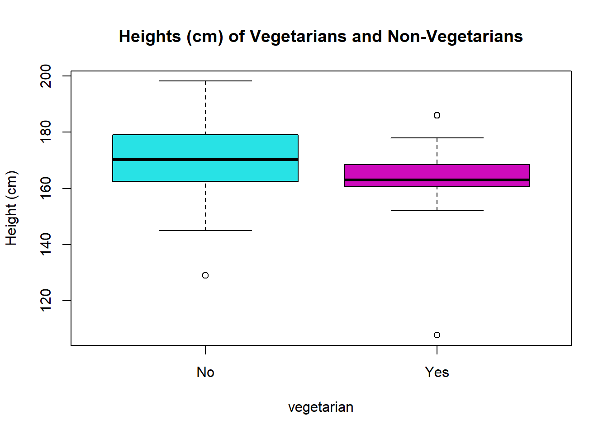

# Load libraries and data
library(rio)
library(mosaic)
library(tidyverse)
library(car)
survey <- import('https://github.com/byuistats/Math221D_Cannon/raw/master/Data/HighSchoolSeniors_subset.csv') %>% tibble()Level up your Tidy-ness
Putting it All Together
Here are two more data wrangling questions to test your skills. Try as best you can to work each step on your own before checking solutions.
The questions relate to the High School survey used in other examples.
Telepaths, Gender and Sleep
Suppose we want to see who gets more sleep on non-school nights, males or females whose chosen superpower would be telepathy. Also, create a column that is the ratio of sleep hours on non-school nights to 8. This calculates the percent of recommended sleep on non-school nights.
- Create a dataset that includes columns Gender, Superpower, Sleep_Hours_Non-Schoolnight, and the ratio of non-schoolnight sleep hours divided by 8, for Males and Females who choose Telepathy as their superpower.
# Your Code:Solution
unique(survey$Superpower)[1] "Telepathy" "Invisibility" "Fly" "Freeze time"
[5] "Super strength"telepaths <- survey %>%
select(Gender, Superpower, Sleep_Hours_Non_Schoolnight) %>%
filter(Superpower=="Telepathy") %>%
mutate(
percent_of_recommended = Sleep_Hours_Non_Schoolnight / 8
)
telepaths# A tibble: 81 × 4
Gender Superpower Sleep_Hours_Non_Schoolnight percent_of_recommended
<chr> <chr> <dbl> <dbl>
1 Male Telepathy 7 0.875
2 Female Telepathy 9 1.12
3 Male Telepathy 9 1.12
4 Female Telepathy 8 1
5 Female Telepathy 9 1.12
6 Male Telepathy 11 1.38
7 Female Telepathy 11 1.38
8 Female Telepathy 9 1.12
9 Female Telepathy 9 1.12
10 Female Telepathy 10 1.25
# ℹ 71 more rows- Create a summary table comparing males and females whose preferred super power is telepathy that includes:
a. Mean, standard deviation, and sample size of Sleep Hours on non-school nights
b. Mean, standard deviation, and sample size of the percent of recommended sleepHINT: Use the unique() function to see what the options are for a given categorical variable.
# Your CodeSolution
telepaths %>%
group_by(Gender) %>%
summarise(
mn_hrs = mean(Sleep_Hours_Non_Schoolnight),
mn_percent_recommended = mean(percent_of_recommended),
count = n()
)# A tibble: 2 × 4
Gender mn_hrs mn_percent_recommended count
<chr> <dbl> <dbl> <int>
1 Female 8.73 1.09 60
2 Male 8.19 1.02 21Vegetarians and Height
- How many vegetarians say meat is their favorite food?
HINT: This can be done with a single filter statement
# Your Code:Solution
survey %>%
filter(Favorite_Food == "Meat",
Vegetarian == "Yes")# A tibble: 1 × 60
Country Region DataYear ClassGrade Gender Ageyears Handed Height_cm
<chr> <chr> <int> <int> <chr> <dbl> <chr> <dbl>
1 USA NC 2022 11 Male 16 Right-Handed 178
# ℹ 52 more variables: Footlength_cm <dbl>, Armspan_cm <dbl>,
# Languages_spoken <dbl>, Travel_to_School <chr>,
# Travel_time_to_School <int>, Reaction_time <dbl>,
# Score_in_memory_game <dbl>, Favourite_physical_activity <chr>,
# Imprtance_reducing_pllutin <int>, Imprtance_recycling_rubbish <int>,
# Imprtance_cnserving_water <int>, Imprtance_saving_energy <int>,
# Imprtance_wning_cmputer <int>, Imprtance_Internet_access <int>, …- Compare mean, and standard deviation of heights between those who are vegetarian and those who aren’t. Include the number of respondents in your analysis.
Be sure to filter out any major outliers in heights first.
# Your Code:Solution
survey %>%
select(Height_cm, Vegetarian) %>%
filter(Height_cm < 214,
Height_cm > 100) %>%
group_by(Vegetarian) %>%
summarise(
med_ht = median(Height_cm),
mean_ht = mean(Height_cm),
sd_ht = sd(Height_cm),
count = n()
)# A tibble: 2 × 5
Vegetarian med_ht mean_ht sd_ht count
<chr> <dbl> <dbl> <dbl> <int>
1 No 170. 171. 10.8 285
2 Yes 163 162. 17.1 15After removing outliers, it looks like vegetarians are shorter, on average.
# Bonus Boxplot:
veg <- survey %>%
select(Height_cm, Vegetarian) %>%
filter(Height_cm < 214,
Height_cm > 100)
boxplot(veg$Height_cm ~ veg$Vegetarian, col = c(5,6), main = "Heights (cm) of Vegetarians and Non-Vegetarians", xlab="vegetarian", ylab = "Height (cm)")
- Create a dataset that:
Includes a column that is percent of recommended sleep (Sleep_Hours_Schoolnight divided by 8 using a mutate statement)
Includes only columns for Favourite_physical_activity, Reaction_time, percent_recommended_sleep (part a)
Includes only students whose favorite physical activity is Walking/Hiking, Basketball, Swimming, Soccer
Filters Reaction Times to be less than 1 second
# Your Code:Solution
phys_act <- survey %>%
mutate(
pct_recommended_sleep = Sleep_Hours_Schoolnight / 8
) %>%
filter(Favourite_physical_activity %in% c('Walking/Hiking', "Basketball", "Swimming", "Soccer"),
Reaction_time < 1) %>%
select(Favourite_physical_activity, Reaction_time, pct_recommended_sleep)Use the clean dataset to:
- Create a side-by-side boxplot for the percent of recommended sleep comparing favourite physical activity
# Your Code:Solution
boxplot(phys_act$pct_recommended_sleep ~ phys_act$Favourite_physical_activity, xlab = "Favorite Physical Activity", ylab = "% Recommended Sleep on School Nights", main = "School Night Sleep by Favorite Physical Activity", col = c(2,3,4,5))
- Create a side-by-side boxplot for the reaction times comparing favourite physical activity
# Your Code:Solution
boxplot(phys_act$Reaction_time ~ phys_act$Favourite_physical_activity, xlab = "Favorite Physical Activity", ylab = "Reaction Time", main = "Reaction Time Results by Favorite Physical Activity", col = c(2,3,4,5))
Which physical activity group has the quickest reaction time?